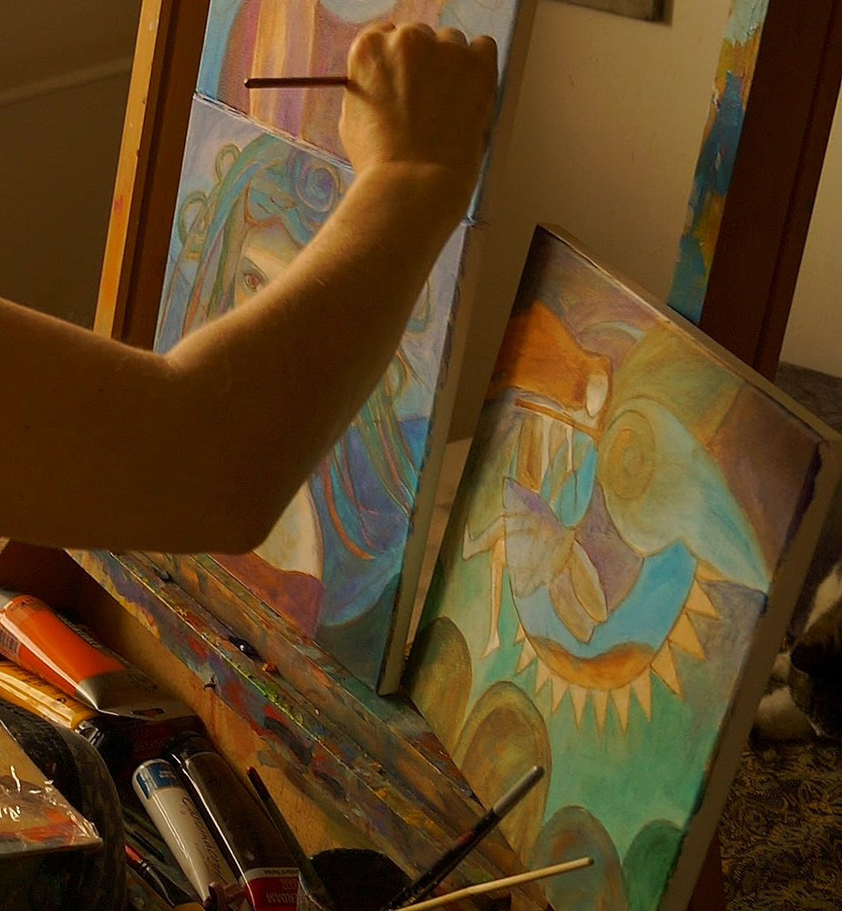

Obrazy z aniołami
Anioły z ludzkimi twarzami, marzeniami i problemami. Maluję je gładko i kolorowo albo z grubą fakturą farby, którą widać z bliska. Możesz wybrać obraz z pracowni albo zamówić własny.
Na zamówienie
Każda praca powstaje w mojej pracowni, od pierwszego szkicu do ostatniej warstwy farby.
Anioły z ludzkimi twarzami, marzeniami i problemami. Maluję je gładko i kolorowo albo z grubą fakturą farby, którą widać z bliska. Możesz wybrać obraz z pracowni albo zamówić własny.

Cykl 366 obrazów, po jednym na każdy dzień roku. Stworzyłam go po to, żeby każdy mógł znaleźć własnego Anioła Stróża – na urodziny, imieniny albo inny ważny dzień.

Portret bliskiej osoby albo obraz do salonu czy na ważną okazję. Zadzwoń, porozmawiamy o temacie, kolorach i formacie.

Ręcznie malowane przedmioty, na przykład drewniane pudełka i lusterka.
Od rozmowy do gotowego obrazu.
Opowiadasz, dla kogo ma być obraz i jaki ma mieć nastrój. Możesz też umówić się w pracowni i obejrzeć obrazy na żywo.
Ustalamy format, cenę i termin, zanim zacznę malować.
Maluję ręcznie w pracowni, warstwa po warstwie.
Zadzwoń i opowiedz, czego szukasz. Odpowiem z propozycją.
Telefon codziennie 9:00–21:00 · albo napisz SMS